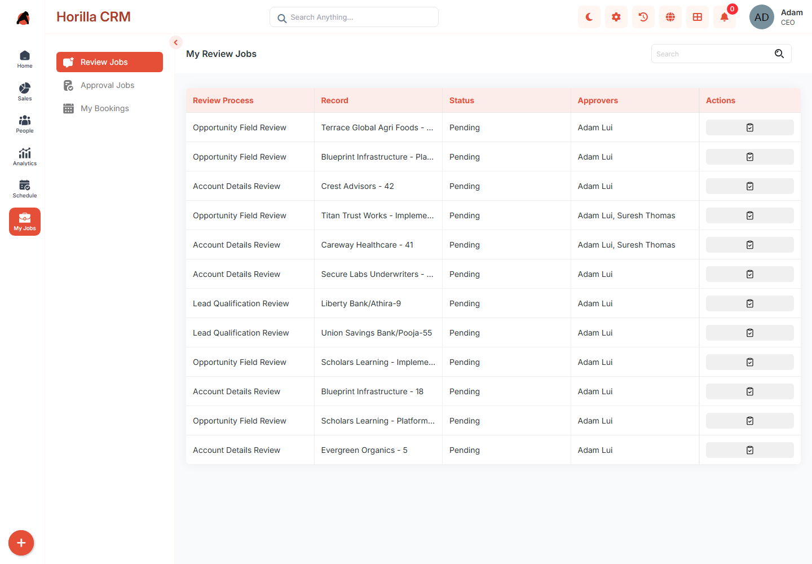
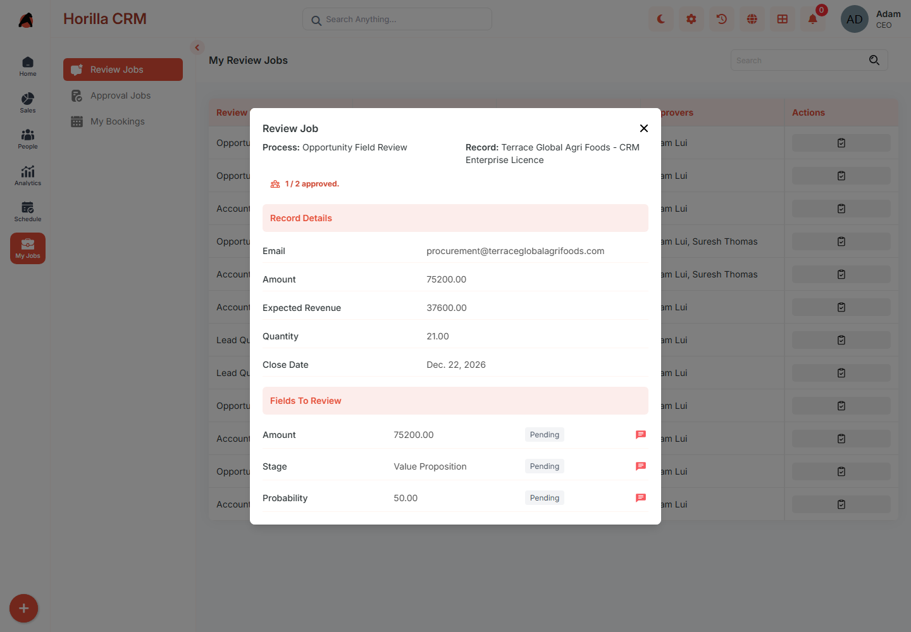
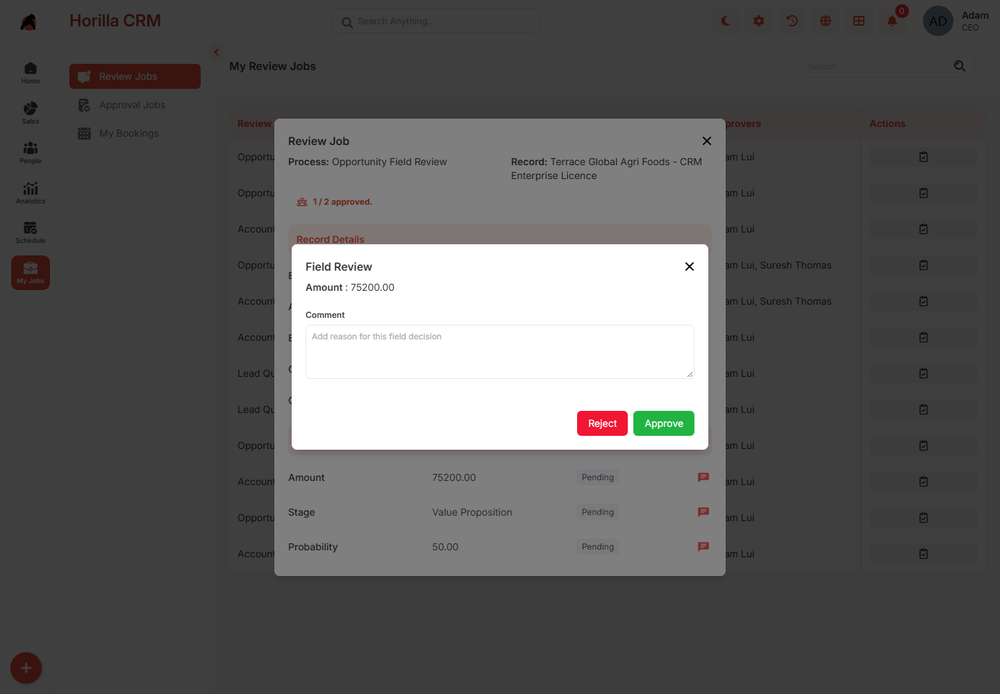

Overview
Go to My Jobs → Review Jobs. The page title is My Review Jobs. It lists the pending review jobs assigned to the signed-in user.
Creating a process, opening its detail and adding rules are set up under Settings → Process Builder → Review Process.
Review Jobs
Each row is a record held for field review. The list only shows jobs that are still pending and assigned to you.
| Column | Contents |
|---|---|
| Review Process | The process that caught the record. |
| Record | The record waiting for review. |
| Status | Pending while the job is still open. |
| Approvers | Everyone assigned to review this record. A row can list more than one person. |
| Actions | Review opens the Review Job dialog. |

Review Job
On a pending job, click Review. The dialog title is Review Job. It names the Process and the Record.
When more than one approver is assigned, a line under the title shows how many have finished, for example 1 / 2 approved.

| Section | Contents |
|---|---|
| Record Details | A short set of fields from the record, such as email, amount and close date. |
| Fields To Review | Each field that the process requires. The row shows the current value, a status of Pending, Approved or Rejected, and a comment icon. |
Field Review
Click the comment icon on a field. The form title is Field Review. It shows the field name and its current value.

| Field | Description |
|---|---|
| Comment | Optional reason for this field. Placeholder: Add reason for this field decision. |
| Reject | Marks this field rejected. |
| Approve | Marks this field approved. |
Each field is decided on its own. The job stays on My Review Jobs until the required approvals are in.
Approval, Rejection and Resubmission
Approved
Once every reviewed field is approved, the record appears in the module's main list view, for example the Leads list. The owner is notified if Notify on Approval is enabled on the process.
Rejected
A rejected record does not appear in the list view. The owner is notified if Notify on Rejection is enabled, and can correct the data and resubmit the record for review.
Resubmission
On a rejected field, the record owner can edit the value in the Review Job dialog and click Save and resubmit. That field returns to Pending for every approver. The approver is notified if Notify on Resubmission is enabled.